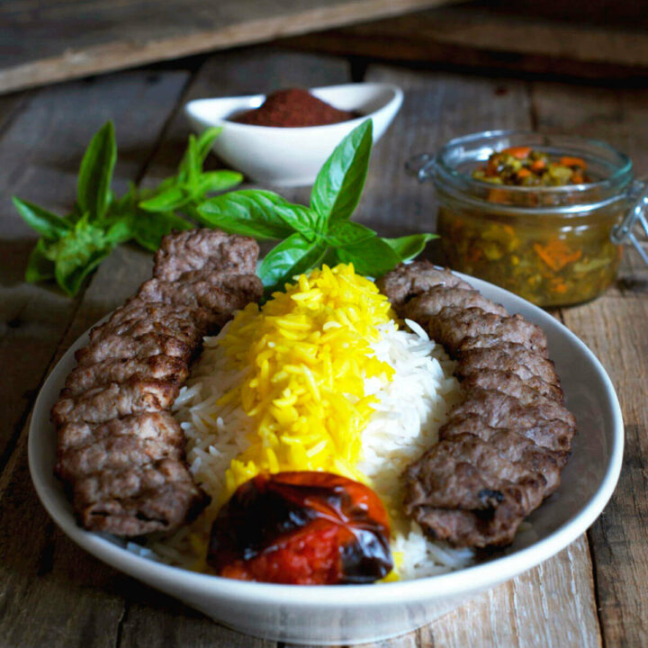

Recipe for Persian Ground Beef Kabob

Kabob Koobideh is a Persian dish made from ground lamb or ground beef or a combination of the two. It is typically prepared on skewers and grilled over fire, but you can also make it in the oven, the stove or in an air fryer!
Ingredients you need
- Onions: You will use regular brown onions. One medium onion for every pound of meat.
- Ground beef: Use 85% lean ground beef. This is especially important if you are going to skewer and grill the kabob. If your meat does not have enough fat on it, it will fall off the skewers as it cooks. The extra fat also adds tremendous flavor. You can also use ground lamb or a combination of beef and lamb.
- Salt: Traditionally, Persian koobideh is only seasoned with salt. For additional flavor, you can black pepper, garlic powder and parsley.
Step-by-step directions
- Peel and quarter the onions and place in the bowl a food processor fitted with the metal blade and process until puréed and smooth. My mother-in-law then adds this onion mixture to the blender to purée it even more. I’ve skipped this step because, well, I’m lazy and I have found that this step isn’t necessary and my koobideh still turns out beautifully.
- Pour onion purée through a strainer placed over a bowl and drain the juice. If your meat has too much moisture on it, it will fall off the skewers. Reserve the onion juice. Do not discard it!
- Using the food processor again, add alternating layers of ground beef, strained onions and salt. Do not over stuff the food processor bowl. The mixture needs room to move and mix so you might have to break this into batches.